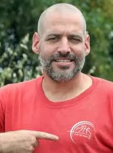

כפר עזה
חרמש עומר ז"ל
איש חינוך בלתי פורמלי, אוהב ילדים, כלבים, מוזיקה וכדורגל
סיפור חיים
עומר חרמש ז״ל, בנם של חוה ושי חרמש, נולד בי״ד בתמוז תשל״ה, 23 ביוני 1975, באשקלון. הוא היה אח ליניב הבכור, ובהמשך הצטרפו למשפחה עינב, גפן ושיר.
עומר גדל והתחנך בקיבוץ כפר עזה, ולמד בבית חינוך שער הנגב. הוא היה ילד ונער חכם, סקרן, רגיש וטוב לב, שנון, בעל חוש הומור ויכולת הבעה מיוחדת ומקורית.
לאחר לימודיו התגייס לצה״ל. עם שחרורו למד לתואר ראשון במכללת ספיר, ובהמשך למד חינוך גופני במכללת קיי. לאחר מכן הוסיף התמחות בחינוך המיוחד.
בבגרותו התגורר עומר בכפר עזה, בבית משלו סמוך למשפחתו. הוא אהב מאוד את הקיבוץ, את הבית ואת החיים שבנה שם. בריאיון ל״ישראל היום״ אמר: ״החיים שלי הם כאן. כשאני מסיים יום עבודה, אני לוקח בקבוק בירה, שומע את אחד התקליטים שלי ונהנה מכל רגע. אני לא רוצה לחיות בישראל בשום מקום אחר חוץ מבכפר עזה.״
עומר עבד עם ילדים בקיבוץ במסגרת החינוך הבלתי פורמלי. הוא אהב מאוד את עבודתו, וילדי הקיבוץ השיבו לו אהבה ונהרו אחריו. אימו סיפרה: ״אהבת אהבת נפש את הילדים שבהם טיפלת. הבנת, כיבדת. לא הרמת עליהם קול. עטפת אותם בהרבה רוך, רגישות, עדינות, הומור, כבוד ותמיד בגובה העיניים.״
עומר אהב מאוד כלבים וגידל אותם במסירות גדולה. הוא אמר: ״כלבים מוזמנים תמיד לבית שלי. קשרתי את גורלי ונפשי עם החיה הנפלאה בתבל, הכלב.״
עומר היה אוהד מושבע ומוכר של קבוצת הכדורגל הפועל תל אביב, וקעקוע גדול של סמל הקבוצה עיטר את זרועו. חבריו סיפרו שכאשר הפועל תל אביב ניצחה, ראשו היה בעננים, וכשהפסידה - ראשו היה באדמה. ראשי הקבוצה כתבו עליו: ״עומר היה אוהד הפועל עוד מילדותו בקיבוץ כפר עזה וליווה את הקבוצה במשך שנים רבות בכל מגרש בארץ. עומר חרמש - אדום לנצח.״
חברו ליאור סיפר כי עומר היה חלק בלתי נפרד מעולמה של הפועל תל אביב, מהשפה המיוחדת של אוהדיה ומהתרבות שסביבה. לדבריו: ״הוא זה הפועל והפועל זה הוא.״
עומר גם אהב לשחק בקבוצת הבוגרים של כפר עזה. אביו שי סיפר כי יום ראשון בערב היה היום החשוב ביותר בשבוע עבורו - מפגש הכדורגל השבועי של ״כדורגל הזקנים״, מבוגרים בגילם וצעירים ברוחם, שבו עומר התגאה בהיותו זקן השבט. לאחר המשחק היה חוזר לבית הוריו, מיוזע ונסער, ומתאר את מהלכיו כאילו היו מופע בלתי נשכח של מסי.
עומר אהב מאוד מוזיקה. הוא אסף תקליטים עוד לפני שהדבר חזר להיות נפוץ, הקשיב לשירים עבריים ולמוזיקה של פעם, ואהב בין השאר את אריק איינשטיין, פינק פלויד, מאיר אריאל, אבבא, רוקפור וטיפקס. הוא היה טיפוס נוסטלגי, הכיר וציטט קטעים שלמים מתוך סרטים ישנים, ועל קיר ביתו הייתה תלויה תמונה גדולה של אריק איינשטיין ואורי זוהר.
הוא אהב גם לשחק בפלייסטיישן. המשחקים הרגיעו אותו, אתגרו אותו ושחררו אותו ממתחים. הגיל לא היווה עבורו מגבלה, והוא שיחק גם עם ילדים ונערים. במובנים רבים, כפי שהעיד על עצמו, הרגיש צעיר לנצח.
אחיו יניב סיפר: ״עומר היה רגיש ודעתן מאוד. ליבו היה תם וישר ועדין ופגיע. הישירות שלו הייתה לפרקים מטרידה, ובד בבד מעוררת השתאות והערצה אצל רבים. ליצן עצוב, ג׳וקר, מוכיח בשער, הילד שמצביע על המלך העירום. זה שלעולם לא יתבגר. זה שכלבים וילדים תמימים כמוהו נגעו בליבו - והוא נגע בליבם. זה שתמיד מזדהה עם החלש.״
חבריו סיפרו כי מה שאפיין את עומר היה הלב הרחב והנשמה הטהורה שלו. הוא היה אדם יוצא דופן, אהוב ונאהב, וכל מי שהכיר אותו לעומק נשבה בקסמיו.
עומר היה אדם עצמאי במחשבתו, דעתן, חד וישיר. הוא החזיק בדעות מוצקות, אהב לדבר על העולם, על חברה, על בריאות ועל צדק, ולא פחד לומר את אשר על ליבו. גם כאשר היה קיצוני או נחרץ, מי שהכיר אותו ידע שמתחת לכל אלה היה לב רגיש, פגיע, ישר וטוב.
עומר, כמו משפחתו, חבריו וכל תושבי עוטף עזה, עבר שנים של מבצעים, סבבים, אזעקות ו״צבע אדום״. היה לו ממ״ד בבית, וכשנדרש נכנס אליו, אך לא הסכים להתפנות מביתו. עבורו, ביתו בכפר עזה היה מבצרו.
שבעה באוקטובר
שבעה באוקטובר והימים שאחריו בבוקר שבת, שמחת תורה תשפ״ד, 7 באוקטובר 2023, חדרו מחבלים לקיבוץ כפר עזה במסגרת מתקפת הטרור הרצחנית על יישובי עוטף עזה.
באותו בוקר היה עומר בביתו בכפר עזה. במהלך המתקפה סיפר למשפחתו שמחבלים ירו לעבר ביתו, ושהוא מסתתר בממ״ד לאחר שנפגע קלות בכף ידו. לאחר מכן נותק עימו הקשר.
במשך עשרה ימים קיוותה המשפחה לקבל ממנו סימן חיים, עד שקיבלה את הבשורה הקשה כי נרצח.
עומר חרמש נרצח בביתו בכפר עזה בכ״ב בתשרי תשפ״ד, 7 באוקטובר 2023. בן 48 היה במותו.
הוא הובא תחילה למנוחות בבית העלמין בקיבוץ שפיים, בזמן שמשפחתו וקהילתו נאלצו לעזוב את ביתם בכפר עזה. בספטמבר 2025 הועבר למנוחת עולמים באדמת ביתו, בבית העלמין בקיבוץ כפר עזה.
זיכרון והנצחה
על מצבתו כתבו אוהביו ציטוט מהשיר ״צעיר לנצח״: ״שתדע לראות האור ולמצוא את האמת בתוך החושך הגדול, שתישאר צעיר לנצח.״ על המצבה נחרטו גם שלושת הקעקועים שהיו על גופו: דמות כלבו צבי, עלה מריחואנה וסמל הפועל תל אביב.
זיכרון ומילים מהלב אימו ספדה לו: ״אני לא קולטת שלא אראה אותך יותר, לא אראה אותך אף פעם. זה ייתכן? זה אפשרי? איך אוכל לחיות בלעדיך? הלוא אני מרגישה עדיין את חבל הטבור שחיבר אותך ואותי בהיותך בבטני. מחבקת אותך, אוהבת אותך הכי הכי. תמשיך גם אי שם לראות את האור.״
אחיו יניב ספד לו וכתב כי עומר היה ״נביא זעם״, נפש מלאת חן ומורכבת, שנעה בין הקומי לטראגי. הוא כתב שתמיד היה בו גרעין קשה של אמת, ראייה חדה, רגישות נדירה, אינטואיציה, חשיבה מקורית וכנות כואבת ומשעשעת.
כאלף איש מכל קצוות הארץ ליוו את עומר בדרכו האחרונה. בין ההספדים ודברי הפרידה, להקת טיפקס שרה לכבודו, וסי היימן ליוותה את הפרידה ממנו בשיר ״כמו צמח בר״.
אוהדים רבים של הפועל תל אביב הגיעו ללוויה כשהם לבושים בחולצות אדומות ושרים שירי אוהדים. חברו לירון ספד לו: ״עומר, אתה היית ותישאר האח האדום של כולנו, תמיד אגדה בשער חמש. אוהבים אותך עומר, השדים האדומים.״
בפברואר 2024 נערך ביוזמת הפועל תל אביב משחק ידידות לזכרו בין קבוצת הפועל ״שווים״ תל אביב לבין זקני כפר עזה, קבוצתו של עומר.
בני משפחתו כתבו: ״עומר שלנו אהוב ליבנו. מתגעגעים ומקווים שטוב לך איפה שאתה נמצא. אוהבים אותך. אימא, אבא, יניב, עינב, גפן, שיר וכל המשפחה.״
עומר נזכר כאדם חד, רגיש, מצחיק, דעתן, אוהב ילדים, כלבים, מוזיקה וכדורגל. איש של אמת, של לב רחב ושל חופש פנימי; מי שחי את כפר עזה בכל ליבו, נשאר צעיר לנצח, והותיר אחריו אהבה גדולה, זיכרונות וחיוך אדום שלא יישכח.